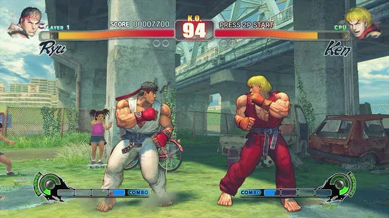
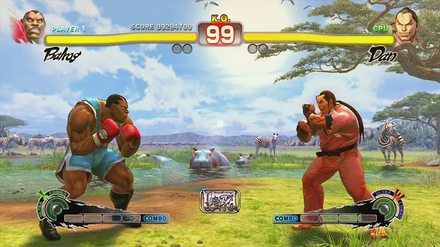

1 Choose your game
2 Detected edition
3 Create the package
First install: the full zip with the game files. Update (a new release): only the program, the settings file
and the shaders, to extract over the existing folder. It needs the same disc selected, because the shaders are made from it.
The update overwrites sf4.toml: keep a copy if you changed it.
Details


After it finishes
Extract the zip into sdmc:/switch/ on the SD card. You get:
/switch/sf4-nx/ sf4-nx.nro sf4.toml (settings) sf4_shaders.mesp (the game's shaders, made from your disc) sf4_shaders.mesp.idx (index of the shader file) game_root/ (the files of your disc)
Launch it in title takeover mode: hold R while starting any installed game, then pick sf4-nx from the Homebrew Menu (or use a forwarder set to a 39-bit address space). Album/applet mode does not give it enough memory.
Privacy
The page reads your disc with your browser's own file access, makes the shaders on your computer with WebAssembly and
writes the zip to your disk. The only network traffic is loading this page and downloading the build
(sf4-nx.nro) and sf4.toml from this site. No game data is uploaded, and there is no tracking.
Nothing from the game is distributed with the port.
Credits
- Capcom: Street Fighter IV. This is an unofficial, non-commercial fan project.
- StevensND: NFSMW-NX and its browser installer, the model for this page.
- NebadasSwifty: masseffect-nx, whose native renderer, shader pipeline and installer this port builds on.
- Tom Clay & ReXGlue SDK: the static recompilation framework for Xbox 360 executables, with portions from Xenia.
- hedge-dev: XenosRecomp, the Xenos shader translator.
- danfromtico: mesa-switch, Vulkan (NVK) on Horizon.
- devkitPro & switchbrew: the Switch homebrew toolchain and libnx.